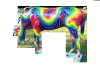

<!DOCTYPE html PUBLIC "-//W3C//DTD XHTML 1.0 Strict//EN"
	"http://www.w3.org/TR/xhtml1/DTD/xhtml1-strict.dtd">
<html>
	<head>
		<meta http-equiv="Content-Type" content="text/html; charset=utf-8" />

<style type="text/css">

	@import "../../../../dojo/dojo/resources/dojo.css";
	@import "../../../../dojo/dijit/themes/dijit.css";
	@import "../../../../dojo/dijit/themes/soria/soria.css";
	@import "../../../../dojo/dijit/themes/tundra/tundra.css";

</style>

<link rel="stylesheet" href="css/bookmarklet.css">

<title>stacktrace</title>

<script type="text/javascript">
console.log("BEFORE Load stacktrace");
</script>
<script type="text/javascript" src="stacktrace.js" />

<script type="text/javascript">
console.log("AFTER load stacktrace");
</script>


<script type="text/javascript"
	src="../../../../dojo/dojo/dojo.js"
	djConfig="parseOnLoad: true, isDebug: false, locale: ''"></script>	

<!--<script type="text/javascript" src="runTests.js" />-->

<script type="text/javascript">
console.log("AFTER load runTests.js");
</script>

<script type="text/javascript">


dojo.addOnLoad(function(){

dojo.registerModulePath("t","../../t");	
dojo.require("t.plugins.core.bookmark.runTests");

            //var stacktrace = printStackTrace();
            //for ( var i = 0; i < stacktrace.length; i++ ) {
            //    console.error(stacktrace[i]);
            //}

////
////console.log("STARTING TEST");
////
//////	var test = 1;
//////    if ( test) {
//////
//////		console.log("dOING IT");
//////
//////         var trace = printStackTrace();
//////         console.log(trace.join('\n\n'));
//////         //Output however you want!
//////    }
////
////    var lastError;
////	try {
////
////	// DO SOMETHING DANGEROUS
////		console.log("unknown variable: " + unknown)
////			
////        // error producing code
////    } catch(e) {
////       lastError = e;
////       // do something else with error
////  
////	console.log("lastError: " + lastError);
////  
////    }
//////
//////    // Returns stacktrace from lastError!
////    //printStackTrace({e: lastError});
////	var stacktrace = printStackTrace({e: lastError});
////	for ( var i = 0; i < stacktrace.length; i++ ) {
////	    console.error(stacktrace[i]);
////	}
////
////	console.log("END OF TEST");


});


//dojo.addOnLoad(function(){
//
//	// REQUIRE Agua
//	dojo.require("plugins.core.Agua");
//	console.log("agua.html    BEFORE Agua = new plugins.core.Agua()");
//	Agua = new plugins.core.Agua( {
//		cgiUrl : "../../cgi-bin/agua/"
//		, htmlUrl : "../../agua/"
//		//, dataUrl: dojo.moduleUrl("t", "json/getData-111127.json")
//	});
//
//
//	console.log("agua.html    BEFORE Agua.loadPlugins");
//	console.log("agua.html    Agua.data: " + Agua.data);
//	console.dir({data:Agua.data});
//	
//	Agua.loadPlugins(
//		//[
//		//	"plugins.login.Login"
//		//]
//	);
//	console.log("agua.html    Completed");	
//});
//


</script>

</head>
<body class="agua tundra claro">
	<div id="attachPoint" class="workflow"></div>

	
	<a class="bookmarklet" title="save on delicious" href="javascript:(function(){f=&#39;http://www.delicious.com/save?url=&#39;+encodeURIComponent(window.location.href)+&#39;&amp;title=&#39;+encodeURIComponent(document.title)+&#39;&amp;notes=&#39;+encodeURIComponent(&#39;&#39;+(window.getSelection?window.getSelection():document.getSelection?document.getSelection():document.selection.createRange().text))+&#39;&amp;v=6&amp;&#39;;a=function(){if(!window.open(f+&#39;noui=1&amp;jump=doclose&#39;,&#39;deliciousuiv6&#39;,&#39;location=1,links=0,scrollbars=0,toolbar=0,width=550,height=585&#39;))location.href=f+&#39;jump=yes&#39;};if(/Firefox/.test(navigator.userAgent)){setTimeout(a,0)}else{a()}})()"></a>


<!--	<a class="stacktrace" title="dump stacktrace" href="javascript:(function(window,document){ldJS=function(){s=document.createElement('script');s.type='text/javascript';s.src='http://eriwen.com/js/stacktrace.js';document.getElementsByTagName('head')[0].appendChild(s);};aT=function(){alert(printStackTrace().join('\n'))};aTWE=function(){window.onerror=aT};aTCF=function(fn){eval('_old_'+fn+'='+fn+';function%20'+fn+'(args){aT();_old_'+fn+'.call(this,args);}')};c=document.createElement('div');cs=c.style;cs.position='fixed';cs.top='0';cs.right='0';cs.backgroundColor='#ddd';cs.padding='0.3em';cs.margin='0%20auto';t=document.createElement('span');ts=t.style;ts.fontWeight='bold';t.innerHTML='Javascript%20Stacktrace:%20';c.appendChild(t);b0=document.createElement('input');b0.type='button';b0.value='Load%20stacktrace.js';b0.style.margin='0%201em';b0.onclick=ldJS;c.appendChild(b0);b1=document.createElement('input');b1.type='button';b1.value='Attach%20to%20window.onerror';b1.style.margin='0%201em';b1.onclick=aTWE;c.appendChild(b1);i=document.createElement('input');i.type='text';c.appendChild(i);b2=document.createElement('input');b2.type='button';b2.value='Attach%20to%20custom%20function';b2.style.marginRight='2em';b2.onclick=function(){aTCF(i.value)};c.appendChild(b2);cl=document.createElement('A');cl.href='javascript:void(0);';cl.onclick=function(){c.parentNode.removeChild(c);};cl.innerHTML='close';c.appendChild(cl);document.body.appendChild(c);})(window,document);"></a>

-->
	
	
</body>
</html>
